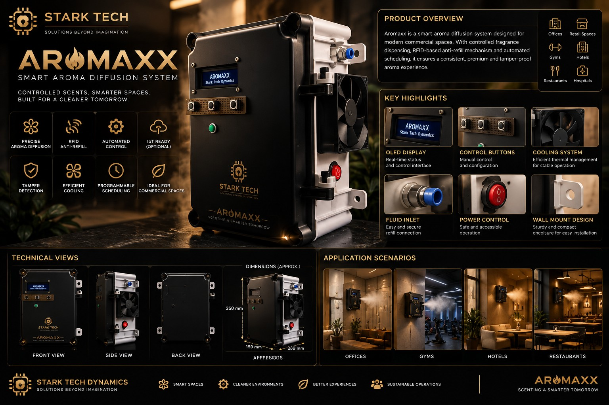
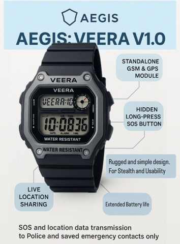
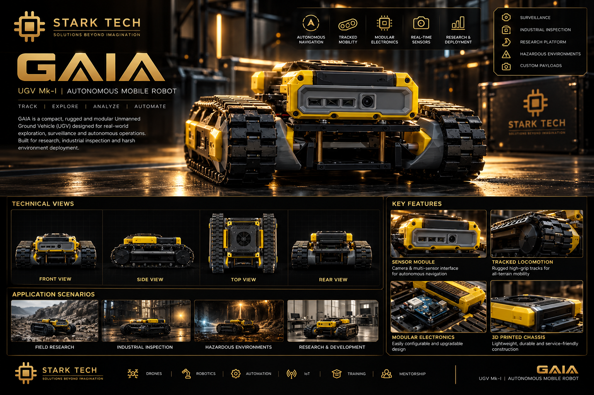
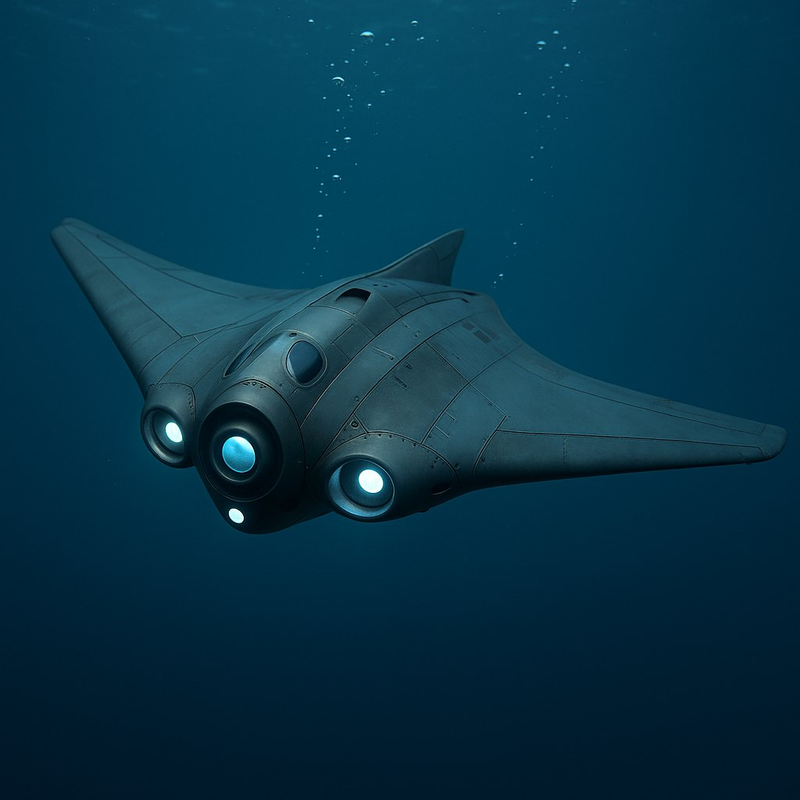
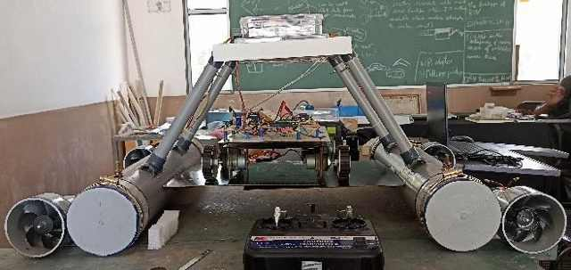
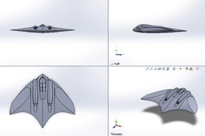
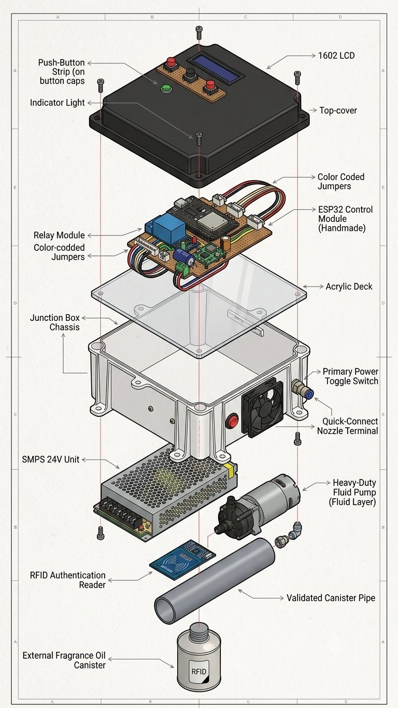
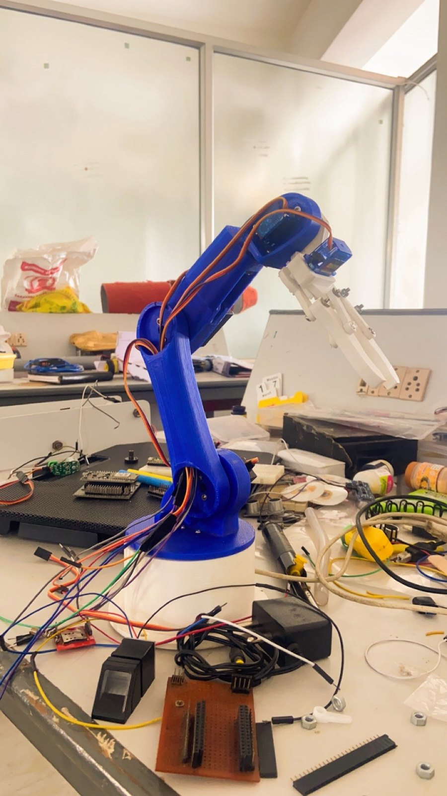
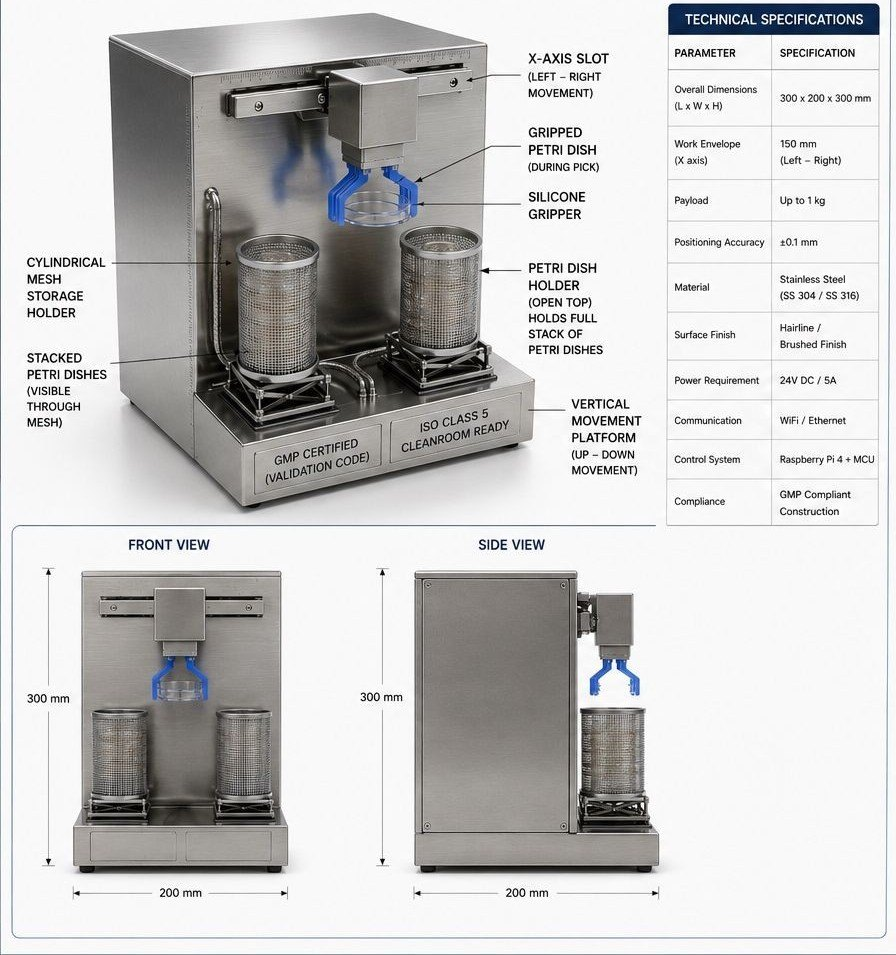

THE FALCON
A lightweight, disposable ornithopter concept.
SELECTED WORK
Selected projects from our portfolio across unmanned systems, robotics, wearable safety, industrial automation and connected devices.
ROBOTICS & LAB AUTOMATION
A laboratory automation project exploring precise robotic handling for repeatable workflows.

CONSUMER PRODUCT DEVELOPMENT
An automatic aroma diffuser developed for consistent fragrance delivery, with a focus on practical design and refill management.

WEARABLE TECHNOLOGY
A wearable personal safety device designed to provide users with a compact, accessible way to trigger an SOS alert.

AUTONOMOUS ROBOTICS
A modular hybrid autonomous ground vehicle developed as part of STARK TECH’s autonomous robotics portfolio.

UNMANNED SYSTEMS
A high-speed autonomous underwater drone designed for underwater exploration and mission support.

UNMANNED SYSTEMS
A tri-component unmanned vehicle designed to integrate surface, ground, and underwater operations in one coordinated platform.
MAJOR PROJECTS
Projects documented in the supplied founder profile presentation.
A lightweight, disposable ornithopter concept.
A sensor-enabled vest for monitoring mine workers’ health and vital signs.
An autonomous underwater vehicle concept for monitoring underwater structures.
An AI-powered painting robot designed for large-scale construction.
A solar-panel cleaning system with integrated energy management.
A cost-effective remotely operated vehicle for industrial applications.
A machine-performance monitoring device for CNC production environments.
A robotics-based system for automating garment production tasks.
A plate-dispensing system designed for hostel dining operations.
MINI PROJECTS
Additional projects listed in the presentation.
A compact panic switch designed to trigger a safety alert.
A project exploring hydrogen fuel-cell technology.
A Raspberry Pi-based system for home automation.
A two-wheeled robot built to explore mobile robotics.
An all-in-one computer assembled from reclaimed components.
A Raspberry Pi-based mini PC for system assistance.
An automated irrigation system designed to reduce manual operation.
An ESP8266-based system for room automation.
A PLC- and VFD-controlled machine for semi-automatic flavoured-milk bottle sealing.
A biometric door-lock system developed for access control.
A 3D-printed six-degree-of-freedom robotic arm with AI-enabled functions.
An ESP32-based programmable controller for automation applications.
PROJECT GALLERY
Concept boards, product visuals and engineering builds from across the STARK TECH portfolio.




Let's discuss the requirements and identify a sensible next step.